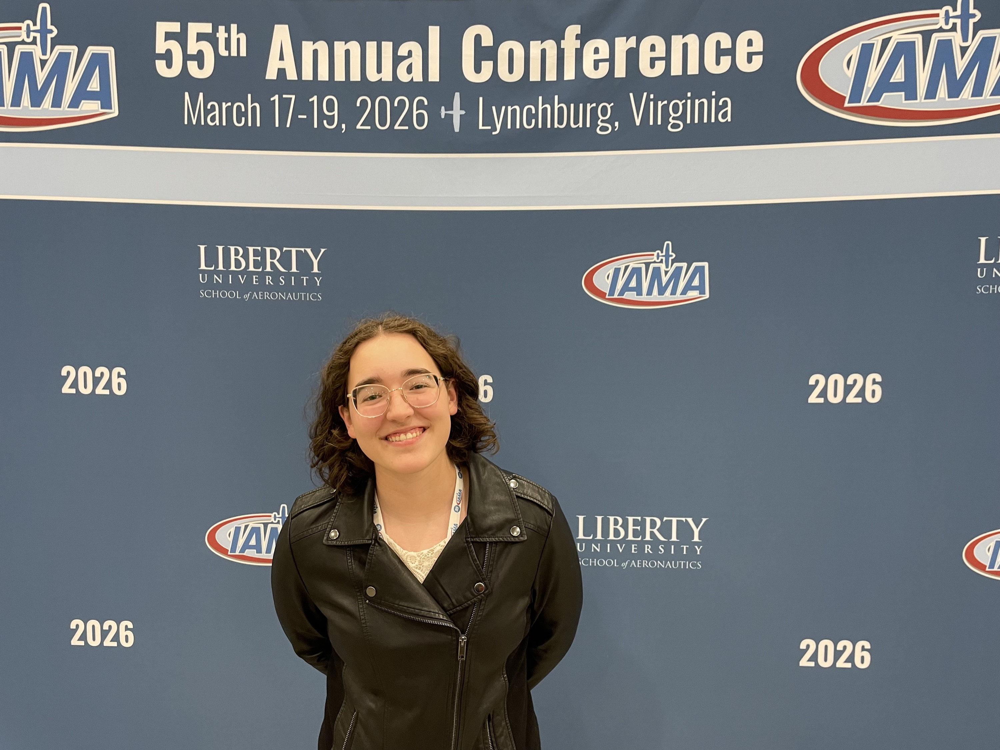

IAMA Conference

A few months ago, my dad and I went to Virginia and toured Liberty University and attended the IAMA conference (International Association of Missionary Aviation).
First we visited JAARS and learned about their programs for transitioning people into the field. They even have classes for learning to ride a motorcycle! We learned about their tools and resources for raising support, as well as processes and expectations. JAARS usually looks for $8,000 a month, but they will accept people into their programs who are at 50%.
At the conference, my dad and I met people from so many different organizations! We were actually warned away from small schools because sometimes the training is lacking but it seems like there are pros and cons to both. Andrews University is sort of an in-between. They aren't very big, but their training will hopefully be thorough.
The presentation that stuck with me the most was a panel discussion about recruitment of new missionary pilots and mechanics. I learned about Proclaim and how they are trying to connect with young people, and what tools they use, like fairs and social media. It was interesting as someone who is trying to learn as much as possible about the organizations and the processes to see what they are doing to get the information out to people like me.
We also learned about En Route, a program for people just like me. They help young aspiring missionary pilots connect with people in the field who have experience. However, since not many people follow this path, it also connects them with other people who are in the same place so that they don't feel alone. They broke into groups with mentors and did things like "apply for one scholarship" or "start a newsletter" or "contact your church or someone who is in MAF", etc. Unfortunately, I would have to be eighteen to take part in this program, but it was interesting to learn that there are programs like this. I hope I will be able to use it in the future.
Probably the most valuable thing we learned from the conference as a whole is that there are three phases in the process of getting to the mission field: training, experience (and support) building, and transitioning. Andrews University would be training, and JAARS would be a transitioning program. However, in-between these is the experience building. This is time to get the required hours for whichever organization you apply for. To be proficient, not just current. This is also time to build a support base and get the first 50%. Since we had no idea that there would be so much time between the training and transition phases, this was valuable information, and we are now more prepared, with a better picture of what the future might look like.
